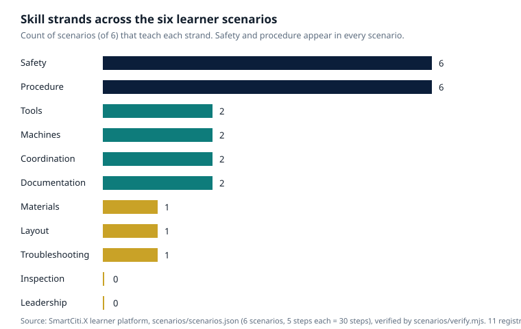

SmartCiti.X long-form series · AGI Future Foundation
One Path, Six Scenarios
The Learner Journey Through the SmartCiti.X Platform

A learner walks into a training hall for the first time and faces a question that has nothing to do with tools. The question is: where do I start, and how do I know I am getting anywhere? A pile of lessons does not answer it. A pile of lessons is a shelf. A path answers it. A path says: you are here, the next step is that one, and when you finish it you will be able to do something you could not do this morning.
That is the idea behind the SmartCiti.X learner platform, and it is the idea this article follows from one end to the other. The platform holds six scenarios, each of five steps, for thirty steps in total, arranged across two tiers — fundamentals and applied — and eleven skill strands. The scenarios are not six separate products. They are six stations on one path, in a deliberate order: K-12 AR/VR foundations; safety procedures; union trades electrical; union trades HVAC; robotics human-robot integration; and outreach prevention and school screening. A learner who walks the whole path meets measurement before machinery, safety before live work, sequence before judgement, and other people — the coach, the team, the community — at every stage.
This article walks the path the way a learner would. It describes each station, what it teaches and what it pointedly does not teach, how the coach and the debrief hold the whole thing together, how the learner's progress is recorded, and where the path currently ends — because a path that pretends to go further than it does is worse than no path at all.
Why a path, not a pile
Training programmes fail in a particular, quiet way: they accumulate content. A video here, a handout there, a simulation bought from a vendor, a guest lecture, a safety talk that everyone has heard three times. Each piece may be good. Together they are a shelf, and a learner facing a shelf has to do the hardest job in education by themselves — deciding what matters, in what order, and whether they are making progress.
A path does that deciding in advance, and it does it out in the open.
The first choice is order. Foundations come before applied work. Safety comes before live equipment. The K-12 foundations scenario — measure, tools, safety — sits at the start of the path for a reason: a learner who cannot measure cannot build, and a learner who has never met a procedure cannot follow one under pressure. The safety scenario comes second, before any electrical or HVAC work, because the habits it teaches — name the hazard, select the protective equipment, check the fit, work the task, report — are the habits every later scenario depends on. The electrical and HVAC scenarios sit in the middle, where the learner has the foundations and the safety habits to use them. The robotics scenario comes after the trades scenarios, because working beside a moving machine demands everything the earlier scenarios taught, plus a new discipline: the shared cell, the boundary, the handover. The outreach scenario comes last, because it asks the learner to do something different from performing a task — to notice, to flag, to refer, to take the habits of the path out into a school or a community.
The second choice is repetition with variation. Safety and procedure appear as strands in all six scenarios — the two most-taught strands in the platform. That is not an accident of authorship; it is the design. A learner meets the PPE check and the verify-dead step in the electrical scenario, the recovery plan in the HVAC scenario, the cell boundary and the e-stop in the robotics scenario, and the report step in every scenario. The same habit, in different clothes, until it stops being a step the learner remembers and becomes a step the learner does without thinking.
The third choice is the ending. Every scenario ends the same way: a debrief with the coach. The platform does not let a learner finish a scenario and walk away with a score. It routes them to a person. That single choice says more about the platform's philosophy than any of its technology: the simulation is not the teacher. The coach is the teacher, and the simulation is the coach's instrument.
Station one: K-12 AR/VR foundations
The path begins where a learner begins: with measurement, tools, and safety, taught to school-age learners in the foundations tier. The scenario's five steps are deliberately small — meet the safety station, learn to measure, identify tools, follow a procedure in order — and their smallness is the point. A first scenario that overwhelms a learner teaches them that the trades are not for them. A first scenario that lets them succeed teaches them the opposite.
There is a larger ambition tucked inside this small scenario. The platform is not only training adults for jobs; it is introducing young people to the trades early, before most of them have decided — usually without ever having tried — that the trades are not an option. The workforce problem described in the companion article Building a Manufacturing Workforce is partly an applicant problem: manufacturers struggle to get enough people to apply in the first place. Early exposure is one answer, and it has to be made with care. There is little rigorous evidence about immersive training for school-age learners in the trades: the strongest studies — the Swiss field study of apprentice electricians, the NCCER pilot with adult learners — were about people already in training, not children meeting a trade for the first time. A programme that extends into schools should treat that extension as research to be done, not as a claim to be made. What the foundations scenario does teach is the shape of skilled work: a task has an order, the order matters, measurement comes before cutting, safety comes before touching.
Station two: safety procedures
The second scenario is the spine of the whole platform. Its five steps are: identify the hazards on the bay's hazard board, select the personal protective equipment, check the fit, work the task, and report. Every step matters, but the first and the last matter most, because they are the steps a careless programme skips.
Naming the hazards before touching any tool is the habit that separates a worker who is safe from a worker who is lucky. The hazard board in the scenario is a teaching device, and it mirrors a real legal duty. Under the Occupational Safety and Health Administration's personal protective equipment standard, employers must assess the workplace for hazards, provide the protective equipment at no cost to the worker, and train each affected worker on when protective equipment is necessary, what kind is necessary, how to put it on, adjust, wear and take it off, the limitations of the equipment, and its proper care, maintenance, useful life and disposal. A simulation can teach the knowledge half of that standard — the naming, the selecting, the knowing-when. Only supervised real work, with real equipment that fits, can teach the rest.
The safety scenario is also the scenario that most clearly shows the platform's limits. It teaches recognition and selection. It cannot teach the fit of a real respirator on a real face, the weight of a real harness, or the feeling of a real hazard. It prepares a learner for the safety conversation. It does not replace it.
Station three: union trades electrical
The third station is the first applied scenario, and it is where the path stops being orientation and starts being a trade. The electrical scenario's five steps are: PPE check and verify-dead; read the schematic; bend the conduit; land the conductors; test and debrief. Each step is a small world. Verify-dead is not a box to tick; it is the procedure that stands between a learner and a live panel. Reading a schematic is not reading a diagram; it is translating a drawing into a physical layout. Bending conduit is the first moment in the path where the material pushes back — and, as the companion article What Immersive Practice Can and Cannot Teach argues in detail, the push-back is exactly what a simulation cannot reproduce. A headset can teach the sequence of a bend. It cannot teach the resistance of the bender, the spring of the conduit, or the judgement of a bend that looks right and measures wrong.
That is why the electrical scenario states its own limit in its own text: simulation only, not certification, not licensure, not apprenticeship hours. The same limit is stated in every scenario, and it is stated because the temptation to blur it is the most dangerous temptation in this whole field. A learner who believes a simulation has certified them is a learner who will walk up to a live panel with confidence they have not earned. The platform refuses to let that happen — not with a footnote, but with the label on the work itself.
The electrical scenario is also the station where the coach's role changes. In the foundations and safety scenarios, the coach is mostly an orienter — showing the learner where things are and what the steps mean. In the electrical scenario, the coach becomes a diagnostician of the learner: watching where the sequence breaks down, asking why the learner chose that step, correcting the habit before it hardens. The simulation records the steps; the coach reads the record and turns it into teaching. That division of labour — machine records, human interprets — is the model the whole platform is built on, and it is examined in depth in the companion article on the AR/VR classroom.
Station four: union trades HVAC
The fourth station is the diagnosis station. The HVAC scenario is built around a single cognitive skill: read pressures, temperatures and airflow together, and name the diagnosis from all three readings before touching a torch. Diagnosis is pattern recognition under uncertainty, and it is the skill that benefits most from cheap repetition. A simulation can present a learner with fifty faulty systems in a week; a real shop can present five. That is a genuine advantage, and the platform uses it.
It also carries a genuine risk, and the scenario's design names it by its structure. The scenario requires the learner to name the diagnosis from all three readings before acting — a guardrail against the most common failure in diagnostic training, which is acting on the first reading that looks wrong. But the simulation's cases are authored, and authored cases have a tell: they contain the fault the author put in. Real faults are messier. A system can read clean on three gauges and still leave a customer without cooling. The programme has to say that to its learners, or it will produce diagnosticians who are confident until the first fault that is not in the book.
The HVAC scenario also carries the platform's clearest statement about external credentials. EPA Section 608 certification — the certification the Clean Air Act requires for technicians who service equipment containing regulated refrigerants, under 40 CFR Part 82, Subpart F — is an external exam, and the scenario states that the run does not certify. The intentional venting of regulated refrigerants is prohibited by law. A simulation that pretended to grant the certification would be lying about the law, and a learner who believed it would be breaking the law. The platform's labelling is not caution. It is the difference between a training tool and a fraud.
The HVAC steps — diagnose, braze and commission — also bring the learner into contact with heat, and heat is where simulation's limits are most visible. A brazed joint has a temperature, a colour, a smell, and a weight that no headset reproduces. The scenario teaches the sequence of brazing and the discipline of commissioning — the readings, the checks, the record. The torch itself is a matter for the real bench, with a real journeyman standing beside the learner.
Station five: robotics human-robot integration
The fifth station is the one the companion article From First Simulation to a Real Machine follows in full, and it is the station where the path's earlier lessons are tested hardest. The robotics scenario's five steps are: confirm the cell boundary and the e-stop; select the training mode and confirm hand-guiding is on; hand-guide the arm through a pick-and-place path; take the part at the handover point; return the arm to home, log the run, and debrief with the coach.
Notice the order. The first step is not the robot. The first step is the boundary and the stop. A learner who has walked the whole path has already met that ordering five times — safety first, in every scenario — and by the fifth station it should feel obvious. That is the point of repetition with variation: by the time the machine in front of the learner can actually hurt them, the habit of checking the boundary first is no longer a rule they remember. It is a thing they do.
The robotics scenario is also the station where the gap between simulation and reality is widest, and therefore where the debrief matters most. A simulated robot is patient, predictable, and incapable of surprising its programmer. A real robot is none of those things — not because it is malicious, but because the real world is full of parts that do not sit where the drawing says they sit, sensors that drift, and people who walk into a cell at the wrong moment. The scenario teaches the shape of the work: the zones, the handover, the habit of logging. The real machine teaches the rest, and the coach is the bridge between the two.
The demand for the worker this station is preparing is not speculative. The U.S. Bureau of Labor Statistics projects employment for industrial machinery mechanics to grow 17.8% between 2025 and 2035 — from about 446,900 jobs to about 526,600 — with roughly 44,400 openings a year. Electricians are projected to grow 9.2% over the same period, with about 72,700 openings a year; heating, air conditioning and refrigeration mechanics 10.9%, with about 40,600 openings a year. Those are projections, not guarantees, and they count replacement hiring as well as new jobs.
Station six: outreach prevention and school screening
The sixth station is the one that surprises people, and it is the one that reveals the most about what the path is for. The outreach scenario does not teach a trade skill. It teaches a civic one: go into a school or a community, notice what needs noticing, flag it, refer it, and record it. Its rule is stated in its own text, in the same plain language as the platform's other limits: screening is not diagnosis. Flag, refer, and record — never diagnose in the field.
That rule is the most important sentence in the whole platform, because it is the sentence that protects the people the learner is meant to help. A learner with a screening checklist and a morning's training is not a clinician, and a programme that let them act like one would be doing harm in the name of helping. The scenario's discipline — notice, flag, refer, record — is the discipline of knowing the edge of your competence and handing over at it. It is, in a different key, the same discipline the electrical scenario teaches when it says verify-dead, and the HVAC scenario teaches when it says the certification is an external exam. The path's last lesson is its first lesson, restated for the world outside the training hall: know what you can do, know what you cannot, and know who to hand to.
The outreach scenario also points at the widest ambition in the SmartCiti.X plan — taking training and prevention work into schools and communities rather than waiting for learners to come to a hall. That ambition is attractive, and it is also where the evidence is thinnest and the responsibilities are heaviest. Working with children and with health-related screening brings duties that a training platform does not discharge by itself: consent, privacy, safeguarding, and a referral pathway that actually exists and actually answers.
Two tiers, eleven strands
Step back from the six stations and the platform's structure comes into focus. The scenarios sit in two tiers: fundamentals — the K-12 foundations scenario and the safety procedures scenario — and applied — electrical, HVAC, robotics, and outreach. The tiers are not difficulty settings. They are a statement about dependence: the applied scenarios assume the fundamentals, and a learner who skips the fundamentals is not accelerating. They are building on sand.
Across the tiers run eleven skill strands, and the distribution of those strands across the six scenarios is the platform's curriculum map in miniature. Safety and procedure appear in all six scenarios. Tools, machines, coordination and documentation appear in two scenarios each. Materials, layout and troubleshooting appear in one scenario each. Two registry strands — inspection and leadership — have no scenario yet, and the platform records that openly rather than hiding it.
| Skill strand | Scenarios teaching it (of 6) |
|---|---|
| Safety | 6 |
| Procedure | 6 |
| Tools | 2 |
| Machines | 2 |
| Coordination | 2 |
| Documentation | 2 |
| Materials | 1 |
| Layout | 1 |
| Troubleshooting | 1 |
| Inspection | 0 — no scenario yet |
| Leadership | 0 — no scenario yet |
Source: the platform's own scenario files (scenarios/scenarios.json), verified by scenarios/verify.mjs, 2026-11-07.

The table also shows the platform's real scope. Six scenarios do not cover a trade. They cover the beginnings: one electrical sequence, one HVAC sequence, one robotics sequence, the safety procedures that precede every task, one foundations sequence, and one outreach sequence. A real curriculum would need dozens of scenarios per trade, written with journeymen, tested with learners, and revised against real outcomes. The platform is a proof that the structure works — scenarios, steps, checks, strands, tiers, a viewer — not a claim that the curriculum exists.
The debrief: where the learning actually happens
Every scenario ends the same way, and that sameness is the most deliberate design decision in the platform. The learner finishes the steps and debriefs with the coach. Not a score screen. Not a badge. A conversation.
The reason is straightforward, and it is backed by the evidence. The Swiss researchers who found the strongest positive result for apprentice electricians using VR — 35 learners prepared with VR against 33 with traditional methods, with assembly electricians improving by almost a whole grade in their final exam — stressed that learners in complex technical processes need structured support, and built a help and question system into their simulation alongside its game elements. The technology helped because a human structure held it up. The Thomann, Zimmermann and Deutscher randomised trial from 2024, with 72 vocational students in warehouse logistics, found the opposite failure mode: VR improved motivation, immersion, and students' perceived knowledge gains, but did not improve immediate declarative knowledge — the paper-and-pencil group actually outperformed the VR group on an objective post-test.
The debrief is the guardrail against that failure. It is where the coach asks the learner what they did, why they did it, what surprised them, and what they would do differently — and where the coach, who has watched the learner's steps, can correct the habit before it hardens. It is also where the simulation's record becomes teaching material rather than surveillance. The platform's learner-progress contract is designed to capture structured events, validated against a schema, with duplicate events rejected — a record of what the learner did, step by step. That record is useful to a coach and useless to a scoreboard. The moment a programme starts ranking learners by simulation scores, it has stopped using the record to teach and started using it to sort.
The record: what the platform remembers, and what it must not
Beside the six scenarios sits a dashboard, and the dashboard is the most candid artefact in the whole platform. It runs in demo mode only, on twenty anonymised sample events for five fictional learners, under a banner that always says "Sample data, not real learners." There are no real learners in it, and the banner says so on every screen.
That candour is worth pausing on, because the alternative is common and corrosive: a demonstration dashboard full of plausible-looking learner data that a visitor mistakes for a real cohort. The platform refuses that confusion. It also records, openly, what it has not decided: hall mapping is open, real VR station IDs are not yet assigned, and the anonymisation rules for any real cohort log are unwritten. Those are not embarrassments. They are the inventory of a demonstration, and a real programme's first job would be to turn that inventory into written rules — who can see a learner's record, for what purpose, for how long, and under whose consent — before a single real learner's data enters the system.
The learner-progress contract itself is a good model for that future. Structured events, validated against a schema, duplicates rejected: it treats a learner's record as something with integrity, not as a log file to be filled. But a contract is not a policy. It says what shape the data takes. It does not say who owns it, who can see it, or when it is deleted. Those are decisions for humans, in writing, before the first cohort.
Three doors into the same path
The platform runs in three modes — VR headset, desktop WebGL, and mobile touch — so that a learner without a headset is not locked out of the curriculum.
The immersive training story is often told as a story about access: a headset is cheaper than a workshop, so training can reach places that could never afford a hall. There is truth in that story. There is also a version in which the technology concentrates access: the schools and programmes that can afford headsets, software licences, IT support and a room with enough floor space pull further ahead, while the rest fall behind. Both versions are true somewhere, and a programme has to choose which one it will be.
The three-mode design is one answer: no learner's progress should depend on hardware they cannot afford. A learner on a phone runs the same scenario, the same steps, the same debrief as a learner in a headset. The experience differs — the phone cannot teach the spatial feel of a cell, and nobody should pretend otherwise — but the path is the same path, and the coach is the same coach. That is the right standard, and it is a standard a real programme should extend rather than abandon when the funding arrives: the headset is an enhancement, not a gate.
The cost question behind the three modes is real and often undercounted. PwC's 2020 study found that VR soft-skills training reached cost parity with classroom training at 375 learners — a useful anchor, but one about a soft-skills course for managers, delivered at enterprise scale, counting the cost of delivery rather than the cost of building a trades curriculum. A trades programme must author its scenarios with journeymen, maintain the software, replace broken headsets, sanitise shared equipment, train its instructors, and keep a real workshop running alongside the virtual one, because the virtual one does not replace it.
Where the path ends today
A path is only as good as its ending, and this path's ending is a list of things that do not yet exist. Saying so is not a criticism of the platform. It is the reason the platform is worth taking seriously: it labels its own limits, in its own files, where anyone can read them.
What does not exist yet: a formed corporation, a signed union agreement, a site, a cohort, or a pilot measured against a comparison group. The platform's own README states that zero of the 111 halls in its roster have signed off by a named practitioner, and a named hall is not a partner. Hall mapping is open. Real VR station IDs are not assigned. The anonymisation rules for a real cohort log are unwritten. Two skill strands — inspection and leadership — have no scenario. No learner has walked this path for real, because there is no hall for them to walk it in.
What does exist: six scenarios, thirty steps, two tiers, eleven strands, a verification script that checks them, a viewer that runs them, a progress contract that records them, and a dashboard that labels its own data as sample. That is a real demonstration of a real structure. It is not a programme, and it is not a promise of one.
The planning documents for SmartCiti.X set a gate for the second tranche of its proposed funding — suggested figures of a $25,000,000 pre-money valuation and a $10,000,000 raise in two $5,000,000 tranches, which are planning figures only, not money raised or valuations achieved — and that gate includes an AR/VR pilot "delivered" at a proposed site, among other conditions including a signed union agreement, a first site closed or leased, a first manufacturing order or pilot customer, and the first tranche reconciled with a Windfall report drafted. The gate is only as strong as its definition, and "delivered" is a word that can mean almost anything. The companion article on AR/VR training sets out what a serious definition would have to contain: a named learner population, performance measured on real equipment against a comparison group, a recorded coaching model, failures reported with numbers, and a statement of what would change before a second cohort. Until that definition is written and agreed, the gate is a sentence, not a standard.
What a real programme would build next
If the platform is the foundation, the building that goes on top of it has a clear shape, and it is worth describing — as a plan, not as a claim.
First, more scenarios, written with journeymen. Dozens per trade, not six in total. Each one authored by someone who does the work, tested with learners, revised against real outcomes. The two empty strands — inspection and leadership — would be filled first, because they are the difference between a worker and a worker who can be trusted to check and to lead.
Second, a written curriculum agreement with the people who set the standards. The Tranche 2 gate requiring a signed union agreement is, in this light, not a bureaucratic hurdle. It is the mechanism by which a draft becomes a programme. A training programme for the union trades cannot be written by a software team alone. It has to be written with the people who do the work, who set the standards, and who will employ the graduates — and until they have signed off, in writing, the curriculum is a draft.
Third, a pilot with a comparison group. The NCCER pilot's design is the model: the same tasks, the same rubric, an expert evaluator, a comparison group. Without a comparison, a pilot can show that learners improved and still prove nothing, because learners improve with any instruction. The pilot should measure performance on real equipment after simulation, not only performance inside the simulation, and not only self-reported confidence.
Fourth, the unglamorous infrastructure: written anonymisation rules, assigned station IDs, hall mapping, a data policy with consent and deletion, a maintenance plan for the headsets and the software, and a coaching model that records how much instructor time each learner gets.
Fifth, the bridge to employment. A path that ends at the training hall door is a path to nowhere. The platform's scenarios end with a debrief; a real programme's path ends with a job — an apprenticeship, a placement, a first day on a real site with a real journeyman. The U.S. Department of Labor's Registered Apprenticeship system is the structure that bridge is built on: paid on-the-job learning combined with related classroom instruction, in a programme registered with the Department or a state apprenticeship agency. SmartCiti.X has no registered programme, no employer partners, and no apprentices. The bridge is a plan, not a fact.
The bottom line
A learner's journey is not a collection of lessons. It is a sequence with a direction: from measuring to making, from safety to live work, from simulation to the real machine, from performing a task to knowing when to hand it over. The SmartCiti.X learner platform, as a demonstration, has that sequence in miniature — six scenarios, thirty steps, one path, a coach at the end of every scenario, and a record that labels its own limits.
What it does not yet have is the rest: the corporation, the agreement, the site, the cohort, the curriculum written with journeymen, the pilot measured against a comparison, the bridge to a job. Those are not details. They are the programme. Until they exist, the most accurate thing to say about the SmartCiti.X learner platform is that the path is drawn, the first six stations are built as simulations, and the real work — the walking of it, by real learners, in a real hall, with real coaches — is still ahead.
Frequently asked questions
Can I enrol in the SmartCiti.X learner platform today?
No. SmartCiti.X is a proposed new corporation, not incorporated, filed, funded, or offered. The learner platform is a locally built demonstration. There is no cohort, no site, and no enrolment. Inquiries go to the Foundation at x@agifuturefoundation.org.
Do the six scenarios certify me in a trade?
No. Every scenario states this in its own text: simulation only, not certification, licensure, or apprenticeship hours. EPA Section 608 certification is an external exam. A simulation can prepare you for those exams; it cannot grant them.
Why does every scenario end with a debrief?
Because the simulation is not the teacher — the coach is. The debrief is where the coach turns the learner's recorded steps into teaching: what they did, why they did it, what surprised them, and what they would do differently. The evidence supports this: the Swiss VR study built structured support into its simulation, and the 2024 randomised trial showed that VR without that structure can raise confidence without raising measured knowledge.
What are the two tiers?
Fundamentals and applied. The fundamentals tier holds the K-12 foundations scenario and the safety procedures scenario. The applied tier holds electrical, HVAC, robotics, and outreach. Applied scenarios assume the fundamentals; skipping ahead is building on sand.
What are the eleven skill strands, and which ones are empty?
Safety and procedure appear in all six scenarios; tools, machines, coordination and documentation in two each; materials, layout and troubleshooting in one each. Inspection and leadership have no scenario yet — the platform records that openly.
Can I run the scenarios without a VR headset?
Yes. The platform runs in three modes: VR headset, desktop WebGL, and mobile touch. The same scenario, the same steps, the same debrief. The experience differs, but the path is the same.
Is the dashboard showing real learners?
No. It runs in demo mode only, on twenty anonymised sample events for five fictional learners, under a banner that always says "Sample data, not real learners."
What would it take for this to become a real programme?
A formed corporation, a signed union agreement, a site, a curriculum written with journeymen, a pilot measured against a comparison group, written data rules, and a bridge to registered apprenticeship and employment. None of those exist yet.
Glossary
- Scenario: one of the six five-step simulated training sequences in the learner platform. Simulation only — not certification.
- Tier: the platform's two levels — fundamentals (foundations, safety) and applied (electrical, HVAC, robotics, outreach). Applied assumes fundamentals.
- Skill strand: one of eleven named skills the platform tracks across scenarios, from safety and procedure to inspection and leadership.
- Debrief: the coach-led conversation at the end of every scenario, where the learner's steps are reviewed and turned into teaching.
- Learner-progress contract: the platform's structured record of learner events, validated against a schema, with duplicate events rejected.
- Verify-dead: the procedure of confirming an electrical circuit is de-energised before work begins.
- EPA Section 608: the section of the Clean Air Act that requires technicians who service equipment containing regulated refrigerants to be certified, and prohibits knowingly venting refrigerant.
- Registered Apprenticeship: a U.S. Department of Labor programme combining paid on-the-job learning with related instruction, registered with the Department or a state apprenticeship agency.
- JATC (Joint Apprenticeship Training Committee): a labour-management committee that runs a registered apprenticeship programme for a trade.
- PPE: personal protective equipment — gloves, safety glasses, hard hats, respirators and similar equipment worn to minimise exposure to hazards.
Sources
- SmartCiti.X learner platform, scenarios and verification (local files):
scenarios/scenarios.json,scenarios/verify.mjs— six scenarios, five steps each, two tiers, eleven skill strands, verified 2026-11-07. The SmartCiti.X vr-entry is live on the SmartCiti.X site; the learner platform itself is staged locally. - PwC, The Effectiveness of Virtual Reality Soft Skills Training in the Enterprise (2020). https://www.pwc.ie/us/en/services/consulting/technology/emerging-technology/assets/pwc-understanding-the-effectiveness-of-soft-skills-training-in-the-enterprise-a-study.pdf
- Transfr, "Is VR Training Effective? Benefits and Real Effectiveness Data" — reporting the 2022 NCCER / ABC Illinois pilot study. https://transfrinc.com/resources/blog/is-vr-training-effective
- PH Zurich, "Virtual reality improves apprenticeships" (20 June 2023) — the ZHAW / PH Zurich field study of 68 apprentice electricians. https://phzh.ch/en/about-phzh/news-events-and-current-topics/news/2023/virtual-reality-improves-apprenticeships/
- Thomann, H., Zimmermann, J., & Deutscher, V. (2024). How effective is immersive VR for vocational education? Computers & Education, 220. Abstract: https://psycnet.apa.org/record/2025-13752-001
- OSHA, Personal Protective Equipment — Safety and Health Topics page. https://www.osha.gov/personal-protective-equipment
- U.S. Bureau of Labor Statistics, Employment Projections 2025–35 (industrial machinery mechanics, electricians, heating, air conditioning and refrigeration mechanics). https://www.bls.gov/emp/
- The Manufacturing Institute / Deloitte, "Taking charge: Manufacturers support growth with active workforce strategies" (2024) — 3.8 million workers needed 2024–2033; 1.9 million could go unfilled. https://themanufacturinginstitute.org/study-manufacturing-in-u-s-could-need-up-to-3-8-million-workers/
- U.S. Department of Labor, Apprenticeship. https://www.dol.gov/agencies/eta/apprenticeship
- EPA Section 608, as described in the platform's HVAC scenario (40 CFR Part 82, Subpart F, Clean Air Act): intentional venting of regulated refrigerants is prohibited; technician certification is by external EPA-approved exam.
- AGI Future Foundation, "SmartCiti.X — W3 Series S10, the Trade Craft Academy" (Article 33). https://www.agifuturefoundation.org/articles/article-33-smartciti-x.html
- AGI Future Foundation, SmartCiti.X series page (S10). https://www.agifuturefoundation.org/series/S10-smartciti-x.html
- Related reading on this site: What Immersive Practice Can and Cannot Teach — AR/VR Training for the Union Trades · From First Simulation to a Real Machine — The Robotics Training Pipeline · Building a Manufacturing Workforce — Apprenticeships, Safety, and the Skilled-Trades Gap · The Coach in the Corner of the Room — Teaching, Safety Culture, and the AR/VR Classroom for the Union Trades
- Related reading across the family: AGI Future Foundation · AGI Fellowship · WAVE / Bioacoustics · WorldForge · Cognition.X · AGI Accelerator
Nothing in this article is legal, tax, or financial advice, and no signing, membership, payment, investment, or offering is made here. SmartCiti.X is proposed, not incorporated, filed, funded, or offered.